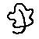
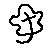
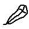
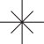
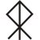

EK Metalsmiths' Guild Makers' Marks
(BACK)
EK Metalsmiths' Guild Makers' Marks |
(BACK) |
| Maker's Mark |
Description | Artist's SCA name and home group |
- A - |
||
| A sun in glory, reversed. | Apollonia Voss Owlsherste, East Kingdom |
|
- C - |
||
|  | A five-lobed white-oak leaf with a long stem curving to the left | Carowyn Silveroak Shire of Silver Rylle, East Kingdom |
|  | A five-lobed white-oak leaf with a long stem curving to the left, with its center line forming a cross | Carowyn Silveroak Shire of Silver Rylle, East Kingdom |
|  | A feather, with its center line forming a cross | Corwyn Ravenwing Shire of Silver Rylle, East Kingdom |
- R - |
||
|  | A simple 8 point star | Raffaella di Napoli Shire of Hartshorn-dale, East Kingdom |
- T - |
||
|  | the runic letters TRIST, superimposed | Tristan De Warrell Barony of Dragonship Haven, East Kingdom |